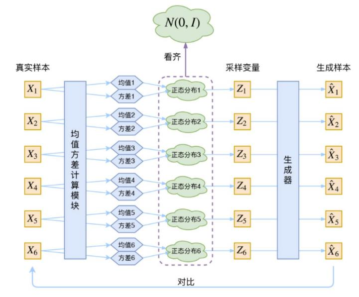

Ruoqi Wang (王若琪)
Senior Student
Sun Yat-sen University
Guangzhou, China
Email:
wangrq29@mail2.sysu.edu.cn
Curriculum Vitae: [CV]
Biography
I am a senior student at Sun Yat-sen University. I am majoring in Computer Science and Technology and will receive a bachelor's degree in June 2022. Also, I am a student intern in Machine Perception Laboratory, SYSU, advised by Dr. Hejun Wu. I'm going to start my PhD study in September 2022 in HKUST(GZ) and I'm eager to hear any useful suggestions.Education
Sun Yat-sen University (SYSU), B.Eng. [Sep. 2018 ~ Jun. 2022 (expected)]- Major: Computer Science and Technology, School of Computer Science and Engineering.
- Awards and Honors:
- Academic Excellence Scholarship, Sun Yat-sen University, 2020
- Student Elite Representative, School of Computer Science and Engineering, Sun Yat-sen University, 2021
- Academic Excellence Scholarship, Sun Yat-sen University, 2021
Research Papers
Accepted

Under Review
Research Projects
Artificial Intelligence in Healthcare
- Asymmetrical multi-modal survival analysis using medical images and structured data. [May. 2021 ~ Aug. 2021]
Machine Perception Laboratory, SYSU, Guangzhou, China
My contributions:- I independently designed an asymmetrical multi-modal attention mechanism (AMMA) to generate more flexible joint representation of medical images and structured data.
- Different from previous works, AMMA can effectively utilize the intrinsic information within every modality and flexibly adapt to the modalities of different importance.
- I designed and conducted various experiments to verify the effectiveness of the new model. On public datasets from TCGA, the results of the proposed method are 5%-6% higher (C-index) than other SOTA methods.
- The article “AMMASurv: Asymmetrical Multi-Modal Attention for Accurate Survival Analysis with Whole Slide Images and Gene Expression Data” was accepted as a short paper by IEEE BIBM.
- Integration of Patch Features of Whole Slide Images through Self-Supervised Learning and Transformer for Survival Analysis. [Dec. 2020 ~ Mar. 2021]
Machine Perception Laboratory, SYSU, Guangzhou, China
My contributions:- I conducted experiments on the influence of self-supervised learning for extracting the features of whole slide images (WSIs) and researched the effect of positional embedding of WSI patches.
- The approach with self-supervised learning and position embedding outperformed the previous best approach by an average of 3% (C-index) in survival prediction on three datasets.
- The article “Integration of Patch Features through Self-Supervised Learning and Transformer for Survival Analysis on Whole Slide Images” was accepted by MICCAI 2021.
- The effect of surgery and drug treatment on the visual field progression of different glaucoma
patients and glaucoma patients with comorbidities.[Dec. 2020 ~ Mar. 2021]
Zhongshan Ophthalmic Center, Guangzhou, China
My contributions:- I designed an efficient sample matching method based on the Levenshtein distance algorithm to solve the problems of inaccurate and incomplete information in the original medical dataset.
- The proposed method increased the number of effective samples by 30%, facilitating subsequent experiments.
- Machine disease diagnosis on small and unbalanced datasets with multi-modal data.[Nov. 2020 ~
Dec. 2020]
Machine Perception Laboratory, SYSU, Guangzhou, China
My contributions:- I used multi-modal data (clinical data and omics data of patients with nasopharyngeal carcinoma) to get better joint representations for classification.
- I proved the complementarity between data from two modalities.
- I studied the application of machine learning methods on small and uneven datasets.
- Cooperated with SYSU Cancer Center (SYSUCC).
Artificial Intelligence in Industry
- Deep discriminative feature learning on concrete surface images. [Jul. 2021 ~ Sep.
2021]
Machine Perception Laboratory, SYSU, Guangzhou, China
My contributions:- I participated in researching a novel end-to-end framework named Deep Discriminative Feature Learning (DDFL) based on Collective Matrix Factorization (CMF) and Vision Transformer (ViT) to extract and select discriminative features of crack images.
- The learning framework integrates the deep feature learning and feature selection so that more discriminative representation can be learned for crack classification.
- The article “Deep Discriminative Feature Learning for Concrete Surface Damage Classification” was submitted to IEEE TII.
Smart City
- Smart balanced delivery task scheduling based on TSP solver. [Jul. 2021 ~ Aug. 2021]
Machine Perception Laboratory, SYSU, Guangzhou, China
My contributions:- I optimized one of the proposed algorithms by reducing loops and superimpose distance and time matrices, making the computational complexity become 1/2 of the original method.
- I re-implemented a baseline method [Code: GCN-NPEC].
Teaching
I have given two lectures for graduate students in the deep learning course offered by our laboratory in May 2021. The two lectures are about VAE (Variational AutoEncoder) and GAN (Generative Adversarial Nets) respectively.
My slides and prevues are as follows.
- VAE: [Slide_VAE], [Prevue_VAE]
- GAN: [Slide_GAN], [Prevue_GAN]
Hobbies
- Gold medal in long jump, CSE sports games, 2019.
- Bronze medal in the 1500 metres, CSE sports games, 2019.
- Bronze medal in the 100 metres, CSE sports games, 2020.
- Champion of the SDCS student union basketball game, 2018.
- Top 16 in the university table tennis game, 2021.
- Top 8 in the university team table tennis game, 2021.